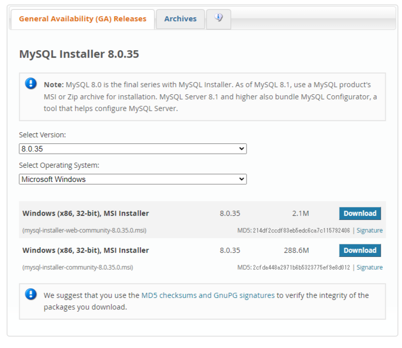
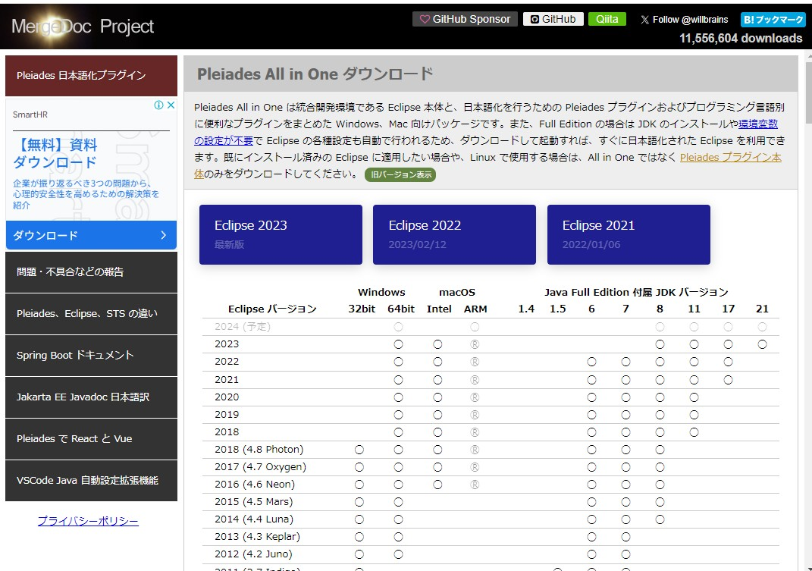
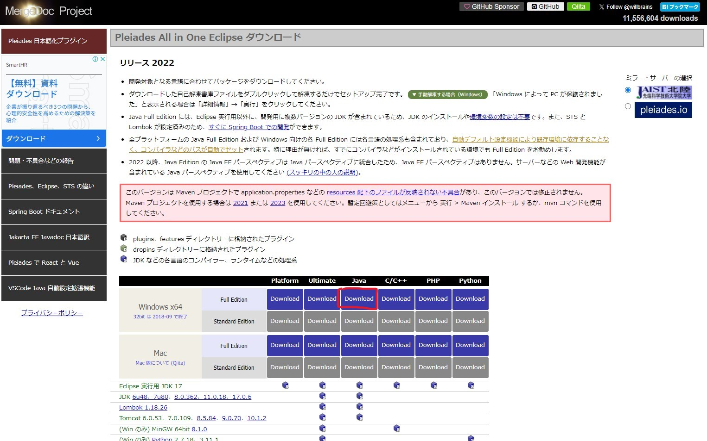

ダウンロード
業務用ITソフトウェアの開発をするために必要なものを準備していきます
- MySQL Workbench
- eclipseIDE var.4.26.0
- Java20
これらのインストーラーをダウンロードしていきます。
MySQL Workbench
MySQL Workbenchダウンロードページ上記のリンクへアクセスし、表示されるインストーラーのバージョンなどを確認し、インストーラーをダウンロードしてください
おそらくこのようなページが開いているはずです。
- Select Version(バージョン選択)で8.0.35を選んでいるか
- Select Operating System(OS選択)で、Windowsを選んでいるか
これらを確認し、2つあるダウンロードボタンのうち、下のダウンロードボタンを押してください。
そうすると下のようなページに飛ぶと思います。
Orcleのアカウントを作れという圧を感じますが、それに負けずにNo thanks,just my download.を押してダウンロードを始めてください。
eclipseIDE var.4.26.0
eclipseIDEダウンロードページおそらくこのようなページが開いているはずです。
青い3つのボタンのうち、Eclipse2022をクリックしてください。
このようなページに遷移します。画像中で赤い丸で囲われているインストーラーをクリックします。
- Windows x64を選んでいること
- Windows x64でもFull Editionを選んでいること
- Javaを選んでいること
これらを確認し、クリックしてください。
押したらインストールが始まるはずですが、人によってはポップアップブロックを有効にしている人もいると思います。
遷移先のページに、httpsから始まるリンクが置いてあると思うのでそこをクリックするとダウンロードが始まります。
下の画像のようにリンクがあるはずです。
- Windows x86では動かないかもしれませんが、
まず最近のPCで32bitのCPUを搭載している例は稀ですし、32bitのPCには最近のPCでは考えられないくらい制約が厳しいのでゴッツイゲーミングPCユーザーは気にしなくていいです。 - どうしても気になって夜しか眠れなくなってしまった場合は落ち着いてWindowsキーとXキーを押し、出てくるメニューから設定を選択し、システムを選んで
Windous10では詳細設定を
Windows11ではバージョン情報を選択して、システムの種類を確認してみてください。よっぽど古い化石を使ってない場合64ビット オペレーションシステム、x64 ベース プロセッサと書いてあります。 - ちなみにCドライブ直下にProglam Files (x86)と書かれている奴には32bitで動作するプログラムが格納されてます。
64bitは32bitの2の32乗のデータが扱えます。すごいね。 - Full Editionを選ばないとTomcatを同梱してくれないので余計な手間がかかります。
Java20
Java20ダウンロードページ上記のリンクへアクセスし、表示されるインストーラーの中で、Windows x64 Installerを探し、右側にあるリンクをクリックしてください。自動でダウンロードが始まります。
一番上にあるからと言ってLinuxのインストーラーを選んでもセットアップされません。
わけわかんなくて焦ってる人のために画像でダウンロード手順を説明します。
まず、サイトにアクセスするとこのような状態だと思います。
上の方はLinuxのインストーラーなので、下にスクロールしていきます。
スクロールしていくと、今回使う20.0.2のひとつ前のバージョンである20.0.1のインストーラーのダウンロード場所が出てきます。
その上にあるWindows x64 Installerが今回使用するものです。右側にあるリンクをクリックし、ダウンロードしてください。